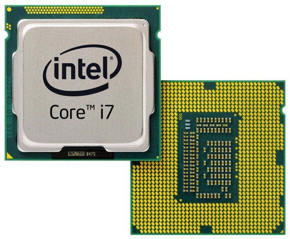

|

|
The CPU is an electonic circuit that is controlled by instructions from a computer program. Instructions are carried out through the process of completing arithmetic, logical, control, and input/outpu operations that are given. From a historical standpoint, the CPU has been in the works since one of the early years in 1960. Throughout this time being, the CPU has developed far within its design and practice. In the containment of the CPU, is a intergrated circuit (IC). The IC holds storage memory, peripheral interfaces, and other components. Without the CPU, the computer would not be able to function because there would not be any piece of hardware that could transfer the commands into activation.